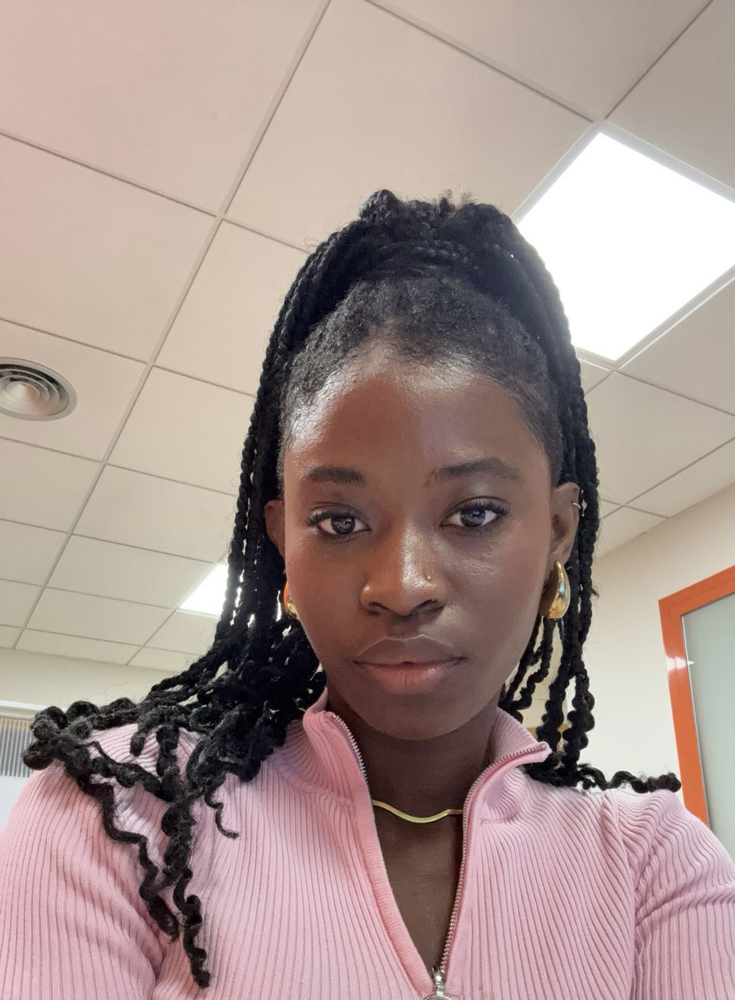

Fatoumata Fatty Jarju

About me
I am a Software Engineering student with a solid foundation in programming, particularly in html, css and javascript. Currently i am focused on my studies and I have developed a deep interest in creating innovative projects, dedicating my free time to expanding my skills in these technologies.
In addition, I am working as an administrative assistant at a private institution, which has allowed me to develop organizational and time management skills, as well as a professional approach to teamwork. I am passionate about learning and applying new concepts, and I constantly seek opportunities to grow both academically and professionally.
Education
- Bachelor degree in Techniques of Aplications for Software - Open University of Catalonia
- Baccalaureate in Tecnology and Sciencie (2018-2020)
- High School (2014-2018)
Work Experience
Centre d'estudis l'academia (Teacher)
2020-2021
-
Lesson Planning: Developing lesson plans tailored to the specific needs and learning goals of students.
- Subject Tutoring: Providing support and instruction in specific subjects, such as math, science, literature, and English.
- Assessment and Evaluation: Evaluating students progress through tests, quizzes, and assignments, and providing constructive feedback.
- Individualized Support: Offering personalized assistance to help students understand challenging concepts and improve their skills.
- Homework Assistance: Helping students with their homework and projects, ensuring they grasp the material and complete assignments on time.
Registro de la Propiedad (Administrative)
2021
- Document Management: Organizing, filing, and maintaining both physical and digital records of company documentation.
- Customer Service: Addressing inquiries and requests from clients, providing information, and resolving issues.
- Administrative Support: Assisting with daily tasks such as scheduling appointments, coordinating meetings, and managing calendars.
- Basic Accounting: Handling billing, managing payments, and maintaining financial records
Skills
My skills are:
- Organization ★★★★☆
- Communication ★★★★★
- Management ★★★☆☆
- Detail-oriented ★★★★☆
- Problem-solving ★★★★☆
Programming languages:
- JavaScript ★★★☆☆
- Kotlin ★★★★★
- Css ★★★★☆
- Html ★★★★★
- Microsft Office ★★★★☆
Awards and Certifications
Other
{kind=link}